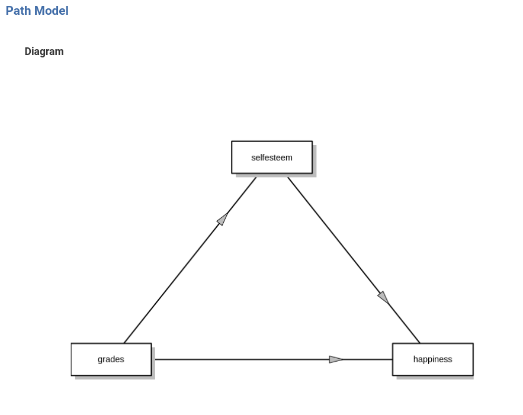
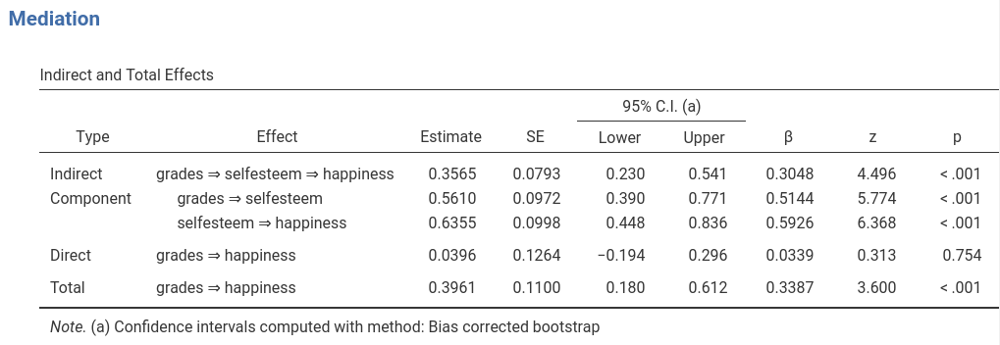
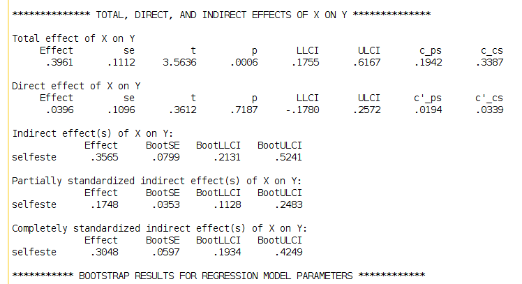
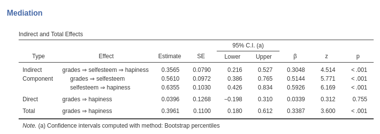

keywords jamovi, SPSS, R, PROCESS, mediation
jAMM version ≥ 0.0.4
Here you can find comparisons of results obtained in jamovi jAMM, jamovi (jmv), pure R, and SPSS. When not explicitly discussed, the code of different software is written with the aim of obtaining equivalent results across programs.
Here we analyze the data discussed in the jAMM: simple mediation. Data can be downloaded from University of Virginia Research Data Service. Here we renamed the variables:
The mediation model is:

As discussed in jAMM: simple mediation, jAMM estimation and standard statistical tests are:
The bootstrap confidence intervals (bias-corrected and accelerated) and z-tests are:

Estimation of the regression coefficients can be obtained in vanilla R with two linear regressions:
data<-read.csv('../data/virginia_simple_mediation.csv')
mod1<-lm(selfesteem~grades,data=data)
summary(mod1)##
## Call:
## lm(formula = selfesteem ~ grades, data = data)
##
## Residuals:
## Min 1Q Median 3Q Max
## -4.3046 -0.8656 0.1344 1.1344 4.6954
##
## Coefficients:
## Estimate Std. Error t value Pr(>|t|)
## (Intercept) 1.49952 0.58920 2.545 0.0125 *
## grades 0.56102 0.09448 5.938 4.39e-08 ***
## ---
## Signif. codes: 0 '***' 0.001 '**' 0.01 '*' 0.05 '.' 0.1 ' ' 1
##
## Residual standard error: 1.639 on 98 degrees of freedom
## Multiple R-squared: 0.2646, Adjusted R-squared: 0.2571
## F-statistic: 35.26 on 1 and 98 DF, p-value: 4.391e-08mod2<-lm(hapiness~selfesteem+grades,data=data)
summary(mod2)##
## Call:
## lm(formula = hapiness ~ selfesteem + grades, data = data)
##
## Residuals:
## Min 1Q Median 3Q Max
## -3.7631 -1.2393 0.0308 1.0832 4.0055
##
## Coefficients:
## Estimate Std. Error t value Pr(>|t|)
## (Intercept) 1.9043 0.6055 3.145 0.0022 **
## selfesteem 0.6355 0.1005 6.321 7.92e-09 ***
## grades 0.0396 0.1096 0.361 0.7187
## ---
## Signif. codes: 0 '***' 0.001 '**' 0.01 '*' 0.05 '.' 0.1 ' ' 1
##
## Residual standard error: 1.631 on 97 degrees of freedom
## Multiple R-squared: 0.373, Adjusted R-squared: 0.3601
## F-statistic: 28.85 on 2 and 97 DF, p-value: 1.471e-10by multiplying 0.561 and 0.6355, one obtains the mediated effect
0.3565, as in jAMM. We can notice that the t-tests in R are slightly
different from the z-tests in jAMM. This is simply due to the
computation of the standard errors. jAMM is based on
R lavaan package, that uses the expected information
matrix obtain the standard errors.
In R, simple mediation models confidence intervals can be computed with the Rmediation package, which provides several methods of computation.
library(RMediation,quietly = T)## This is lavaan 0.6-17
## lavaan is FREE software! Please report any bugs.## To take full advantage of multiple cores, use:
## mxOption(key='Number of Threads', value=parallel::detectCores()) #now
## Sys.setenv(OMP_NUM_THREADS=parallel::detectCores()) #before library(OpenMx)##
## Attaching package: 'OpenMx'## The following objects are masked from 'package:Matrix':
##
## %&%, expmsumr1<-summary(mod1)
sumr2<-summary(mod2)
a<-sumr1$coefficients[2,1]
se.a<-sumr1$coefficients[2,2]
b<-sumr2$coefficients[2,1]
se.b<-sumr2$coefficients[2,2]
#### delta method #####
medci(a, b, se.a, se.b,type = "asymp")[1]## $`95% CI`
## [1] 0.1939949 0.5190495#### Monte Carlo method ####
medci(a, b, se.a, se.b,type = "MC")[1]## $`95% CI`
## 2.5% 97.5%
## 0.2076877 0.5308750In R, simple bootstrap confidence intervals can be computed with the mediation package
Here are the results, again in line with the jAMM results.
library(mediation,quietly = T)
med<-mediate(mod1, mod2, treat='grades', mediator='selfesteem', sims=1000, boot = T, boot.ci.type = "bca")## Running nonparametric bootstrapsummary(med)##
## Causal Mediation Analysis
##
## Nonparametric Bootstrap Confidence Intervals with the BCa Method
##
## Estimate 95% CI Lower 95% CI Upper p-value
## ACME 0.3565 0.2232 0.53 <2e-16 ***
## ADE 0.0396 -0.1907 0.30 0.73
## Total Effect 0.3961 0.1668 0.64 <2e-16 ***
## Prop. Mediated 0.9000 0.5903 2.80 <2e-16 ***
## ---
## Signif. codes: 0 '***' 0.001 '**' 0.01 '*' 0.05 '.' 0.1 ' ' 1
##
## Sample Size Used: 100
##
##
## Simulations: 1000In spss, one can estimate simple mediation and get confidence intervals for mediated effect using PROCESS macro. The results coincide with the jAMM results.

Recall that PROCESS uses the “percentile” method for bootstrap confidence intervals, thus, to get an even closer match between PROCESS and jAMM, one can ask jAMM to use this method as well. Here are the results, which align to PROCESS results to the second significant digit.

Notice that the “Completely standardized indirect effect” in PROCESS corresponds to jAMM \(beta\) effect, which is, as the name signals, the mediated effect obtained after standardizing all variables.
Got comments, issues or spotted a bug? Please open an issue on GAMLj at github“ or send me an email